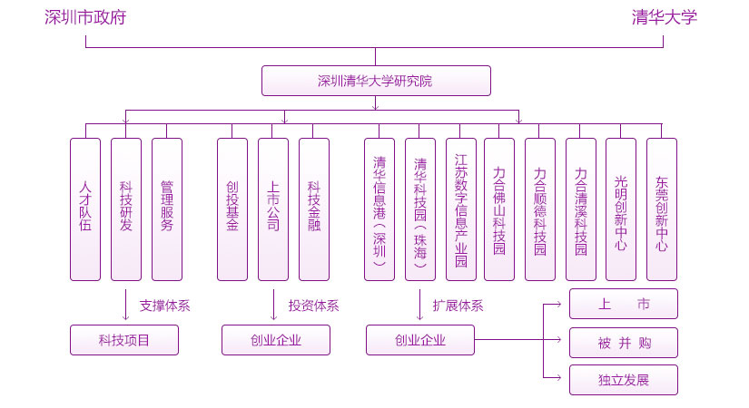

深圳清华大学研究院（教育培训）
RESEARCH INSTITUTE OF TSINGHUA UNIVERSITY IN SHENZHEN
深圳清华大学研究院是深圳市政府和清华大学于1996年12月共建的、以企业化方式运做的事业单位，双方各占50%股份，实行理事会领导下的院长负责制。研究院占地面积1.6万平米、建筑面积3.2万平米，1999年8月落成使用。
研究院恪守着清华“自强不息，厚德载物”的校训，秉承了深圳“敢闯敢试，兼容并蓄”的精神，以体制机制创新为核心，在实践中形成了独具特色的发展理念，确立了行之有效的发展战略，各项工作持续不断地取得了令人瞩目的进展与成绩。

深圳清华大学研究院恪守着清华“自强不息，厚德载物”的校训，秉承了深圳“敢闯敢试，兼容并蓄”的精神，以体制机制创新为核心，在实践中形成了独具特色的发展理念，确立了行之有效的发展战略，各项工作持续不断地取得了令人瞩目的进展与成绩。
研究院创立了“四不像”理论，即：研究院既是大学又不完全像大学，文化不同；研究院既是科研机构又不完全像科研院所，内容不同；研究院既是企业又不完全像企业，目标不同；研究院既是事业单位又不完全像事业单位，机制不同。
深圳清华大学研究院教培部作为深圳清华大学研究院负责教育培训的专业部门，依托深圳特区的地域优势,积极整合研究院以及国内外名校资源，致力于高层次人才培养的同时为企业家提供产学研资一体化服务，从1997年办学至今，已经为近4万余名学员提供了智力支持。
深圳清华大学研究院视频介绍

目标定位：
作为中国首个“产学研资”一体化高端教育平台，深圳清华大学研究院以“培育高层次人才，搭建科技金融平台，产业化撬动中国企业未来”为使命，以“教育是第一思想力，科技是第一生产力，金融是第一推动力，通过教育、科技与金融的全方位孵化，赋予中国企业核心竞争力”为办学理念。在研究院“产学研资”的发展模式中，肩负着“人才培养”的重要职责，是商界精英专业化、全方位的终身学习平台。紧密结合清华研究院的科技创新孵化体系及产业投资平台，充当中小企业最有效的孵化器。
课程设置：
根据新经济形势下各行业的不同需求，开发了一套完整的与时俱进的培训体系，课程内容涉及公司治理、高层管理、员工素质、学位提升等模块，课程类型涵盖工商管理、资本运作、产业地产、金融理财、人文修养等等。同时，根据个性化需求，还提供专业的企业内训、管理咨询、案例研究等服务。在必修课程之外，定期举办“紫荆大讲堂”等高峰论坛，邀请国内外专家学者、成功企业家和各界名人做专题学术报告，帮助学员不断完善自身的知识结构，把握社会经济发展动态，提升组织的运营和管理水平。
“产学研资”平台：
“产学研资”是一个系统工程，字面意思就是产业（产业化）、教学、科研、金融的系统合作。致力打造“产学研资”一体化高端教育平台，在专注商界人才培养的同时，以企业为主体，以市场为导向，整合学校与企业、科研单位、金融投资机构的资源，建立“产业、教学、科研、金融”四位一体的教学形式和企业孵化模式。通过清华研究院平台，不仅能够学到最前沿的理念和方法，减少企业技术创新的盲目性，缩短新产品从研发到进入市场的周期，并且能够有效降低技术创新的风险和成本，甚至实现大规模的高速发展。总而言之，“产学研资”的本质是促进科技、教育与金融的结合，使科技成果更好地转化为现实生产力。清华研究院“产学研资”的创新孵化体系可以归结为四个平台：产业平台、教学平台、科研平台、金融平台。
产业平台
- 中国产业正处于转型升级的关键阶段，清华研究院与清华大学、地方政府、科研机构以及企业紧密合作，在一定的区域范围内形成产业园区和企业集群，为企业充当孵化器，通过政策优惠、技术支持、成果转化、风险投资来帮助企业成长，推动科技项目产业化。其中，清华研究院的产业平台有：清华信息港（深圳）、清华科技园（珠海）、江苏数字信息产业园、力合佛山科技园、力合顺德科技园、力合清溪科技园、光明创新中心、东莞创新中心、北美创新创业中心（美国硅谷）、欧洲中心（英国牛津）、俄罗斯中心（莫斯科）...
教学平台
- 在研究院“产学研资”的发展模式中，肩负着“人才培养”的重要职责，是商界精英专业化、全方位的终身学习平台。紧密结合清华研究院的科技创新孵化体系及产业投资平台，充当中小企业最有效的孵化器。教育是第一思想力，课程涵盖工商管理、资本运作人文素养、企业内训等内容。.
科研平台
科技是第一生产力，清华研究院聚集了200多名教授、博士、高级研究人员和海归学者，建立了广东省最大的“企业博士后科技工作站”，设立5个研究所和13个实验室，4个国家级重点实验室深圳分室，2个广东省重点实验室，8个深圳市重点实验室。实验室以市场为导向进行应用研究，优化科技资源配置，打造“实验室经济”，与企业共建研发基地，帮助企业突破技术难关、实现转型升级，并提供高端仪器设备租用、科技咨询、专家指导等服务。其中，清华研究院的科研平台有：新材料与生物医药研究所、新能源与环保技术研究所、光机电与先进制造研究所、电子信息技术研究所、宽带无线通信研究所、无锡清华高新技术研究所
金融平台
金融是第一推动力，清华研究院拥有专业的投融资团队以及实力雄厚的金融综合服务平台，能够为处于不同生命周期、不同规模、不同行业的企业提供多层次、多元化、全方位的金融服务，其中涵盖融资、担保、小额贷款、融资租赁、天使投资、创业投资、基金管理、咨询服务等，我们用资本促进科技创新，让科技财富化，实现科技与金融的比翼双飞。其中，清华研究院的金融平台有：深圳力合创业投资有限公司、深圳清研创业投资有限公司、深圳力合天使创业投资管理有限公司、深圳力合金融控股股份有限公司、力合融资租赁有限公司、深圳市力合智通融资担保股份有限公司、深圳市力合科技小额贷款有限公司、深圳市力合华睿股权投资基金管理公司。